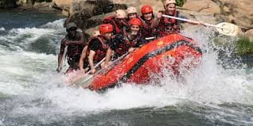

Popular Tourist Attractions

Jinja is known as the adventure capital of East Africa. Below are some of the most popular attractions and activities visitors can enjoy.

Jinja is known as the adventure capital of East Africa. Below are some of the most popular attractions and activities visitors can enjoy.